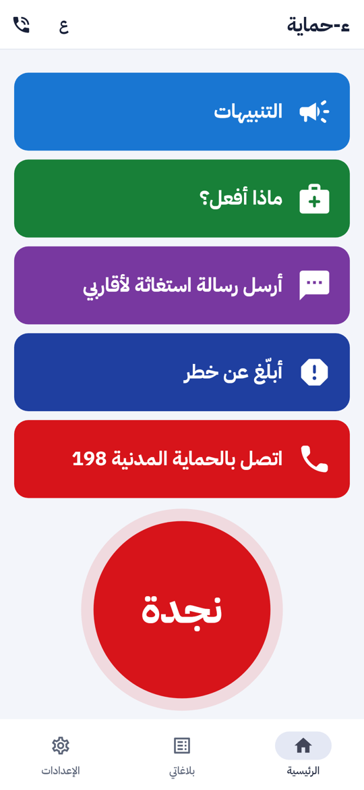
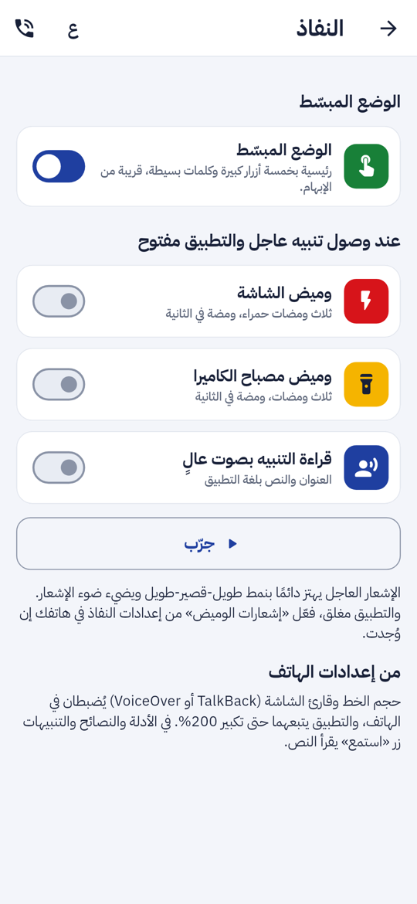
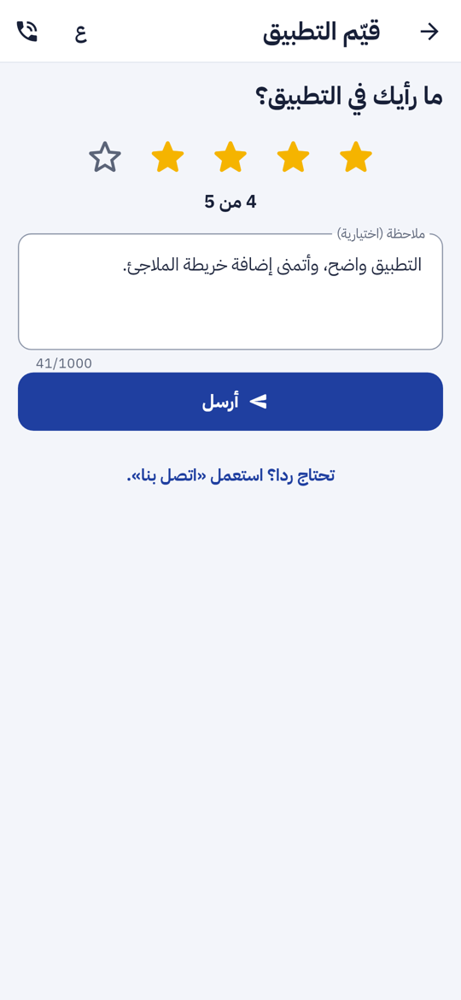
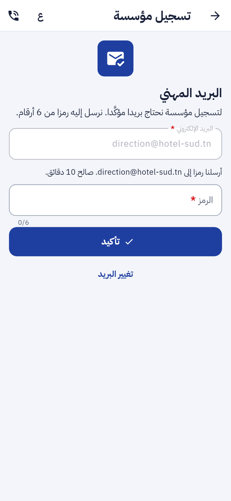

ء-حماية e-Himaya
تقرير المرحلة P5b: الوضع المبسّط بأزرار كبيرة، تقييم التطبيق وإعادة جولة التعريف، تسجيل المؤسسة من الهاتف بتأكيد البريد برمز، وبروتوكول التجربة اليدوية للنفاذ
1. أين تقع هذه المرحلة من مسار المشروع
التبليغ
←
المعالجة
←
التحليل
←
مؤشرات الأداء KPI
←
التنبؤ بالذكاء الاصطناعي
←
اتخاذ القرار
- التبليغ: المسنّ ومن يصعب عليه الاستعمال يجد 198 والبلاغ ورسالة الاستغاثة في خمسة أزرار كبيرة، والمؤسسة تسجّل من الهاتف دون المرور بالبوابة.
- التحليل: تقييمات المواطنين وملاحظاتهم تصل إلى لوحة القيادة، بالمعدل والتوزيع وحسب الإصدار.
2. مراجعة ← تصميم ← تطوير
ما وجدته: الرئيسية فيها النجدة والبلاغ وأربعة أرقام وثمانية اختصارات والطقس، وهي كثيرة على من يصعب عليه الاستعمال. مسار «مؤسسة» يقول إن التسجيل يتم «عبر البوابة» فقط، والتسجيل من الهاتف (P2a) يشترط بريدا مؤكَّدا في Keycloak، وهو ما لا يملكه من دخل برقم هاتفه. «اتصل بنا» طلبٌ بآجال ورد، وليس تقييما.
- الوضع المبسّط (F-APP-142): مفتاح في شاشة «النفاذ»، معطّل افتراضيا. الرئيسية تصير خمسة أزرار بعرض الشاشة وارتفاع 88 نقطة على الأقل، بجمل قصيرة تبدأ بفعل: التنبيهات (مع عددها)، ماذا أفعل؟، أرسل رسالة استغاثة لأقاربي، أبلّغ عن خطر، اتصل بالحماية المدنية 198. الأزرار في متناول الإبهام، والنجدة تحتها. «عرض كل الخيارات» يعيد الرئيسية الكاملة. لا شيء يُحذف من التطبيق.
- تقييم التطبيق (F-APP-143): «قيّم التطبيق» في الإعدادات: خمس نجوم، كل نجمة تُقرأ «4 من 5»، وملاحظة اختيارية. يُرسل مع المنصة والإصدار واللغة. الملاحظة مشفّرة، وثلاثة تقييمات في اليوم على الأكثر لكل حساب، وتُصدَّر مع «نسخة من معطياتي» وتُحذف مع الحساب. من يحتاج ردا يُوجَّه إلى «اتصل بنا».
- بطاقة «تقييم التطبيق» في اللوحة (F-DSH-45): في الإعدادات الوطنية، لمدير النظام ومحرر المحتوى. تعرض المعدل والعدد والتوزيع بالنجوم والمعدل حسب الإصدار وآخر الملاحظات، على 30 أو 90 أو 365 يوما. كل قراءة تُسجَّل في سجل التدقيق.
- جولة التعريف (F-APP-143): من الإعدادات، والبطاقات الخمس نفسها، و«تخطّ» يعود إلى الإعدادات.
- حساب المؤسسة من الهاتف (F-APP-12): «سجّل مؤسستك» يدخل برقم الهاتف ورمز SMS والصفة تبقى «مؤسسة». ثم البريد المهني برمز من 6 أرقام صالح 10 دقائق، بخمسة طلبات في الساعة وخمس محاولات. يُحفظ الرمز ببصمة HMAC والبريد مشفّرا، ويعامل الخادم البريد المؤكَّد كبريد Keycloak المؤكَّد. ثم بطاقة المؤسسة، وتبقى في انتظار المراجعة كما قبل. Keycloak لم يتغيّر.
- بروتوكول التجربة اليدوية (NFR-10): 18 خطوة لـ TalkBack و VoiceOver بالعربية والفرنسية، مع جدول نتائج يُملأ: manual-accessibility-test.md.
3. لقطات
الرئيسية المبسّطة، ومفتاحها في شاشة «النفاذ»، و«قيّم التطبيق»، وتأكيد البريد المهني بعد إرسال الرمز:




4. التقدم لكل جزء
| البند | الحالة | التقدم |
|---|
| F-APP-142 الوضع المبسّط والاستعمال بيد واحدة | منجز (P5b) |
|
| F-APP-143 تقييم التطبيق وإعادة جولة التعريف | منجز (P5b) |
|
| F-DSH-45 بطاقة التقييم في اللوحة | منجز (P5b) |
|
| F-APP-12 حساب المؤسسة من الهاتف | منجز (A و P5b) |
|
| NFR-10 بروتوكول التجربة اليدوية | جاهز (P5b) |
|
| NFR-10 إجراء التجربة على هواتف حقيقية | يحتاج هواتف ومستعملين |
|
تقدم P5b: 100%. تطبيق المواطن والمؤسسة لم يبق فيه متطلب معتمد غير منجز، إلا ما ينتظر الترخيص (سجل المواقع والبحث عن مفقود).
5. المحاكاة [SIM]
- [SIM] رمز SMS في بيئة التجربة محاكى كما في المراحل السابقة، ورموز البريد تُلتقط في Mailpit ولا تُرسل إلى صندوق حقيقي.
- [SIM] العناوين والتقييمات في اللقطات بيانات اختبار.
6. الاختبارات المطبقة
| المكوّن | العدد | النتيجة |
|---|
| الخلفية (pytest) | 867، منها 16 جديدة: التقييم (8) وتأكيد البريد (8) | كلها ناجحة |
| تطبيق الهاتف (flutter test) | 540، منها 5 مسارات جديدة وحالات نفاذ للرئيسية المبسّطة وتأكيد البريد والتقييم وجولة التعريف | كلها ناجحة |
| لوحة القيادة (vitest) | 464، منها 4 لبطاقة التقييم | كلها ناجحة |
flutter analyze و ruff و eslint و tsc | — | لا ملاحظة |
المسارات في apps/mobile/test/widgets/simple_mode_flow_test.dart:
- الرئيسية المبسّطة: خمسة أزرار بارتفاع 88 نقطة على الأقل، 198 في النصف الأسفل من الشاشة، الاتصال بـ 198، ثم «عرض كل الخيارات».
- «أبلّغ عن خطر» و«ماذا أفعل؟» يفتحان شاشتيهما.
- التقييم: النجوم إجبارية، ثم الإرسال بالإصدار واللغة.
- جولة التعريف من الإعدادات والعودة إليها.
- تسجيل مؤسسة من الهاتف: الرقم، الرمز، البريد الخاطئ، الرمز الخاطئ، ثم الرمز الصحيح والبطاقة.
وفي الخادم: حدود الاستعمال، الإشراف على الملاحظة، الأدوار، التدقيق، التصدير والحذف، انتهاء الرمز ونفاد المحاولات، ثم تسجيل مؤسسة بالبريد المؤكَّد برمز. وأُصلح في اللوحة اختبار قديم كان مرتبطا بتاريخ ثابت فصار يفشل بعد سبعة أيام.
8. المخرجات المحيَّنة
- الملف الوصفي V11 (docx و pdf) في
spec/: F-APP-12 و F-APP-142 و F-APP-143 منجزة، والمتطلب الجديد F-DSH-45، و332 مسارا و399 عملية في الواجهة البرمجية، وعدد الاختبارات، وخارطة الطريق.
- مخططات UML في
diagrams/: مخطط تسلسل جديد «تسجيل مؤسسة من الهاتف» (46)، وصنفا «رمز البريد» و«تقييم التطبيق» في مخطط أصناف الهوية.
- العرض للمسؤولين: 26 مرحلة، والاختبارات، وخطوة «تجربة النفاذ» ببروتوكول جاهز، في
presentation/.
- مرجع التصميم مُعاد توليده بالأيقونات الجديدة: design-reference.html.
- جدول التتبع (FR-A-002 صار مغطّى باختبار) وسجل الإصدارات والبند P5.
9. ملاحظات وانحرافات
- البريد يُؤكَّد في الخادم لا في Keycloak، فلا تغيير في مزود الهوية ولا في البوابة. من له بريد مؤكَّد في Keycloak لا يُطلب منه الرمز.
- الوضع المبسّط يغيّر الرئيسية فقط، وتبقى الإعدادات والشريط السفلي كما هي، حتى لا يضيع من يساعد المستعمل.
- التقييم ليس طلبا: لا رقم ولا آجال ولا رد، فلا يدخل صندوق «اتصل بنا».
10. ما يلي
إجراء التجربة اليدوية بالبروتوكول مع جمعيات ذوي الإعاقة على هواتف حقيقية، ثم تطبيق الأعوان والتقارير الميدانية حسب خارطة الطريق.